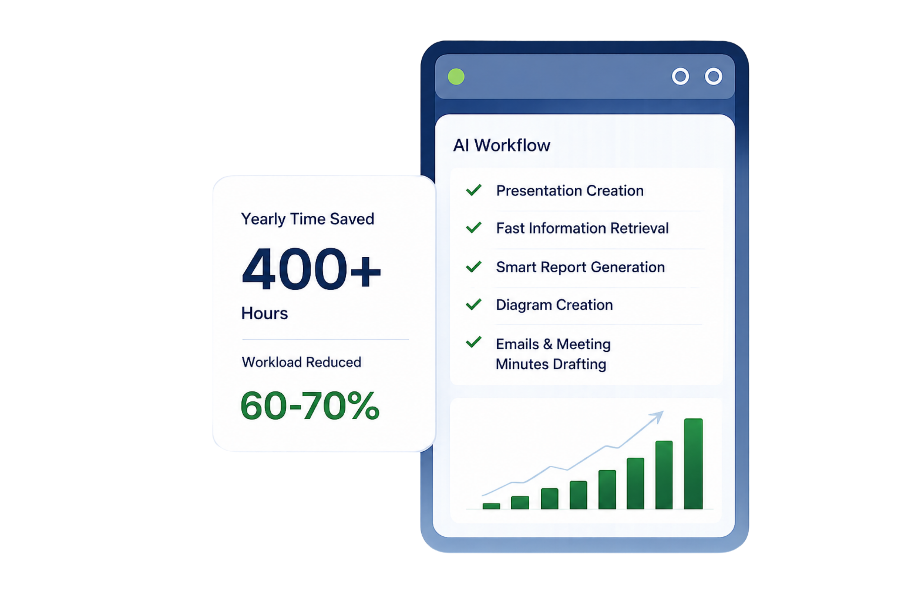

Spending Hours on Presentations
Turning technical reports into slides takes the whole night — when AI could do it in minutes.
The AI Productivity System for professionals who want to get more done in less time.

Real Time Savings
See exactly how ProAiMax compresses hours into minutes on your most common professional tasks.
Preparing one technical presentation from multiple documents
15–20 hours
3–5 hours
15 hours
per presentation
Information Search
3–4 hours per task
30–45 minutes
2–3 hours
per task
Converting notes into visuals
3–5 hours
1 hour
2 hours
per diagram
Preparing reports
4–8 hours
2–3 hours
2–3 hours
per report
THE REAL CHALLENGES
You're not alone. These daily roadblocks cost you hours of productive time.
Turning technical reports into slides takes the whole night — when AI could do it in minutes.
You know what to write, but typing, visuals and structuring long documents slows you down.
One image could explain everything to management — but creating it takes too long.
You know exactly what to say, but putting thoughts into clear written words takes too much time.
Plenty of data from audits and maintenance, but no easy way to turn it into useful insights.
Plenty of study resources, but with work pressure and packed schedules, finding time feels impossible.
ChatGPT, Copilot, NotebookLM — everyone talks about them, but you need clear guidance to use them effectively.
Time lost on repetitive tasks could be better spent on what truly matters.
0+
Hours / Week
Wasted
0+
Hours / Year
Lost
60–70%
Productivity
Reduced
High
Stress & Mental
Fatigue
A simple system that turns effort into outcomes.
Bring your task, data or document.
Apply proven frameworks and workflows.
Use the right AI + non-AI tools with intent.
Deliver high-quality results faster.
Designed by professionals, for professionals.
Despite the abundance of resources—YouTube tutorials, blogs, and hands-on materials—productivity has become more complex, not simpler. Time is lost navigating scattered content, with little conversion into real practical skills.
The problem is not access to information.
It is the absence of a structured, time-efficient system.
Professionals try too many tools without clarity.
Work gets scattered without a defined process.
Time is lost in trial and error, not execution.
Productivity is not driven by tools.
It is driven by systems.
ProAiMax brings structure to how professionals work.
Analysed many tools and picked the best ones based on real industry use cases.
The right tools, used the right way, at the right time.
Step-by-step methods that create clarity and consistency.
Reduce time spent on reports and presentations
Extract insights quickly from technical information
Convert ideas into clear, structured outputs
Improve productivity without increasing working hours

See how ProAiMax works in real scenarios.
Watch Demos →Create professional presentations in a fraction of time.
Write structured, insightful reports faster.
Extract the right information and make better decisions.
Work smarter and focus on high-value activities.
Practical. Proven. Built for Professionals.